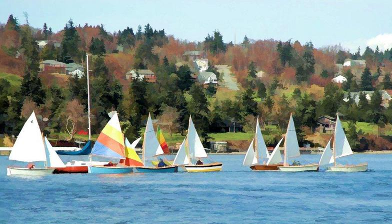

Who We Are
FOHH is a volunteer-based non-profit organization. It was established in 2004 by community members living near the south end of Holmes Harbor in response to accelerating growth. Supporters now include many from South Whidbey and beyond. The catalyst to become involved in protecting the harbor's ecosystem stemmed from a land use proposal that appeared to threaten the natural environment and the quality of life of Holmes Harbor. FOHH continues to participate, investigate, clarify, and respond to new and ongoing issues affecting Holmes Harbor.
